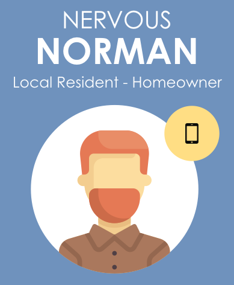
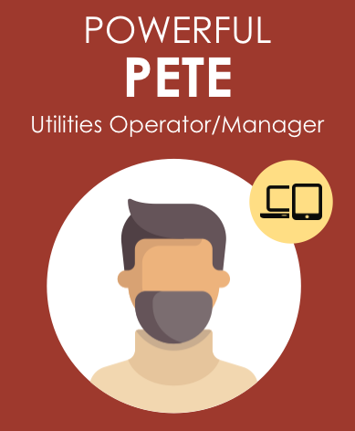

Knowledge Base
Knowledge graphs are playing an increasingly important role in enhancing the intelligence of Web search and in supporting information integration. Today, there is no set knowledge graph that relates urban systems with hydrologic forecasts. Our data will be served as Linked Data. One could navigate this information with standard web browsers, automated crawlers, or pose complex queries with SQL-like query languages (e.g. SPARQL). Have you thought of asking the Web about cities with the roads most at risk of flooding over the last 10 years? That is the kind of query we are talking about. Moreover, users will be able to build their own interfaces on top of the graph to visualize, explore, and share the information they find most relevant.
Risk Points
Instead of treating the built environment and hydrologic system as two overlapping entities, we seek to identify the core explicit relationship between the conditions that cause problems and the infrastructure that will be impacted. To do this, we extract the key relationships between spatial objects (like OpenStreetMap building footprints and road networks) and relate them to their nearest river, and the critical streamflow that will inundate that location.
Each point on the earth surface where there is a relationship between the built and natural environment can be considered a risk point, some obviously being more critical than others! Finally, we relate these risk points to operational forecasts from predictive models at a national (NOAA National Water Model) and local (e.g. HEC-RAS, SWMM and ICPR) scale providing real-time information and insight on level of risk at each point.
Delivering flood information to anyone, anytime, anywhere.
The Urban Multiplex
When an urban area gets heavy rainfall, the impact of flooding resulting from this rainfall event is dictated not just by the amount of rainfall, but how the physical infrastructure, such as the stormwater network, power stations and water retaining structures, is able to collectively absorb shocks produced by the flooding event. Most often, the emergency responders can see the impact of rising water levels on humans, but the impact on the urban infrastructure and its interconnected components, and its role in flooding is not visible or understood. All urban systems are interconnected. Impacts to the power grid will impact water treatment centers, houses, and emergency response activities.
Understanding the impacts of flood begins with identifying which risk points will be impacted. From there, the way impacts cascade through the system depend on the relationships between different object types. As part of the UF-OKN, we are developing a rich ontology that generalizes the relationships between different feature types to help identify these impacts as we traverse the knowledge network.
Past, Present and Future
Real-time information is not the only thing that is useful for flood events. Often, we are interested in whether a location is at risk, if conditions have been changing through time, and how would future infrastructure investments affect risk to identify whether it is wise to invest in a location either as an individual or as a city. In addition to real-time and forecast flood information, the UF-OKN will provide access to a 24-year historical analysis product for the entire country along with the tools to produce easily digestible synopses of how and where flood risk has changed, and how it is expected to evolve in the future.
Performant Inundation Maps
Everyone wants real-time performant flood maps that can be interacted with and shared via the web. Using the UF-OKN and the risk point entities, this will be a reality.
Build Better Apps
The UF-OKN is the Weather Underground for flooding. We will provide the critical information you need but how you use it is up to you! Users can build their own APIs, web maps, and applications on top of the UF-OKN. Whether this is for personal, public, or commercial use, the UF-OKN will provide a central place for users to build on and contribute data.
Real-time Information
You just received a county-wide flash flood alert. What should you do? With the UF-OKN we can provide the general public and first responders with credible, actionable information to make decisions that best reflect their needs and interests. Is our information perfect? Of course not, but wouldn't you like to have the best state-of-the-art information at your fingertips when it matters most?
Identifying our users
Two stakeholder workshops were organized to bring together industry, academic, and government participants to better understand their day-to-day challenges. Through user inputs, we identified a robust list of user personas to help guide the initial content and relationships needed in an urban flooding focused knowledge graph.
- 
- 